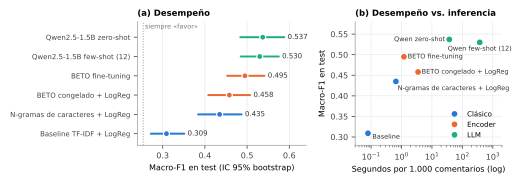

Inteligencia Artificial y Neurociencias
Leoni, Petra · Mendez, Agustín · Pizi, Lucía · Siles, Milagros
Comparamos tres enfoques de NLP (ML clásico, un encoder preentrenado y un LLM con prompting) para clasificar la postura (favor, against, neutral) de comentarios ciudadanos sobre propuestas del dataset ALIA Spanish Stance Detection. La pregunta guía es cuándo conviene cada uno, considerando no solo el desempeño sino también su costo. El código está organizado en cinco notebooks (Etapa1 a Etapa5), una por consigna.
El dataset tiene 3.000 comentarios sobre 387 propuestas, cada uno con tres anotaciones. Las clases están desbalanceadas (favor 62%, against 22%, neutral 16%) y el acuerdo entre anotadores es moderado-bajo: solo el 51% de los comentarios tiene acuerdo total, el 44% tiene mayoría 2/3 y el 5% no tiene mayoría (Fleiss' κ = 0,41). Neutral es la clase más ambigua (solo el 25% de sus casos tiene acuerdo total) y su frontera más difusa es con favor. Esto pone un techo al desempeño de cualquier modelo: parte del “error” es ruido en la etiqueta.
Variable objetivo. Evaluamos majority voting, soft labels y scores continuos. Elegimos majority voting porque es la etiqueta con la que se evalúa (Macro-F1 respecto de majority_label), es interpretable y compatible con los tres enfoques. Un score continuo impone un orden entre clases que no existe (neutral no es “la mitad” entre favor y against). Descartamos los 150 comentarios sin mayoría (no tienen etiqueta de referencia), por lo que los resultados no aplican a los casos más ambiguos.
Split. Con un split aleatorio, 224 de las 226 propuestas de test aparecían también en train, y el modelo podía aprender el tema de cada propuesta en lugar de la postura. Por eso usamos un split agrupado por propuesta (StratifiedGroupKFold), que mide la generalización a propuestas nuevas. Además, las 15 propuestas con más de 25 comentarios van siempre a train: en una primera versión, una sola propuesta era el 25% del test. Resultado: 2.019 / 413 / 418 comentarios (70,8 / 14,5 / 14,7%), con proporciones de clase similares. Todas las decisiones se tomaron en validación y el test se usó una sola vez por enfoque. Como validación y test tienen solo ≈65 comentarios neutral, diferencias de 1–2 puntos de Macro-F1 no son concluyentes.
Texto. Los comentarios tienen una mediana de 46 palabras (máx. 155) y son “limpios” (casi sin URLs ni emojis). Las palabras más frecuentes son las mismas en las tres clases y son temáticas (madrid, propuesta, barrio): la señal de postura está en expresiones como “(no) estoy de acuerdo”. Además, la lista de stopwords de NLTK incluye negaciones (no, ni, sin), y hay textos idénticos con distinta etiqueta según la propuesta: la postura depende de la propuesta, no solo del comentario.
El baseline (TF-IDF de unigramas + Regresión Logística) obtiene Macro-F1 = 0,329 en validación, igual que un clasificador aleatorio: predice casi siempre favor (accuracy 0,65, pero F1 de neutral 0,06). A partir de ahí probamos cambios en forma secuencial, uno por vez:
El modelo final (n-gramas de caracteres + LogReg balanceada, reentrenado en train+val) obtiene 0,435 en test contra 0,309 del baseline. La mejora viene de las clases minoritarias (F1 against 0,10 → 0,35; neutral 0,06 → 0,29). Entrena en ≈4 s en CPU y pesa 1,3 MB. Los coeficientes son interpretables: acuerdo, totalmente y apoyo empujan hacia favor; no, eso y quiero hacia against; y preguntas y votar hacia neutral.
Usamos BETO (bert-base-spanish-wwm-cased, 110 M de parámetros) sin preprocesar el texto, con la entrada [CLS] propuesta [SEP] comentario, para que la atención pueda relacionar ambos segmentos.
Sin fine-tuning (encoder congelado como extractor de embeddings + LogReg balanceada), el mejor pooling (promedio de las últimas 4 capas) obtiene 0,495 en validación, lo mismo que el modelo clásico. En test da 0,458. Los embeddings genéricos capturan más el tema y el estilo que la postura.
Con fine-tuning (AdamW, warmup, cross-entropy ponderada por clase, mejor época según validación) exploramos tres decisiones:
Con 3 semillas, el fine-tuning obtiene 0,495 ± 0,017 en test (validación: 0,564). El desvío entre semillas es del mismo orden que las diferencias entre configuraciones, así que el ajuste fino de hiperparámetros tiene poco sentido con este tamaño de validación. La mejora sobre el modelo clásico está en against y favor, y sobre todo en los comentarios con acuerdo total. El F1 de neutral (0,29) no mejora y varía mucho según la semilla. El entrenamiento toma ≈72 s en una GPU T4 y el modelo pesa ≈440 MB.
Ejecutamos Qwen2.5-1.5B-Instruct localmente en fp16 (3,1 GB de pesos, 4,7 GB de VRAM pico), sin modificar sus pesos. En lugar de generar texto libre y parsearlo, le pedimos responder con una sola palabra y usamos la probabilidad que asigna a favor / contra / neutral como primer token de la respuesta (scoring de etiquetas). Así nunca hay respuestas inválidas, alcanza con una sola pasada por comentario y se obtienen probabilidades que se pueden calibrar.
En test, el zero-shot calibrado obtiene 0,537 y el few-shot 0,530 ± 0,018 (sin calibrar: 0,474). Su ventaja está en neutral (F1 0,40 contra 0,29 de BETO). El costo es la inferencia: ≈37 s cada 1.000 comentarios en una T4 (372 s con few-shot).
| Modelo (test, n = 418) | Macro-F1 | IC 95% | Acc. | F1 fav. | F1 ag. | F1 neu. | Entren. | Inf. / 1.000 | Tamaño |
|---|---|---|---|---|---|---|---|---|---|
| Referencia: siempre favor | 0,254 | – | 0,615 | 0,761 | 0 | 0 | – | – | – |
| Clásico: baseline TF-IDF + LogReg | 0,309 | [0,27; 0,35] | 0,629 | 0,772 | 0,095 | 0,059 | 0,9 s (CPU) | 0,08 s (CPU) | 0,6 MB |
| Clásico: n-gramas car. + LogReg bal. | 0,435 | [0,38; 0,49] | 0,529 | 0,667 | 0,346 | 0,292 | 3,6 s (CPU) | 0,65 s (CPU) | 1,3 MB |
| Encoder: BETO congelado + LogReg | 0,458 | [0,41; 0,51] | 0,502 | 0,604 | 0,459 | 0,311 | 7,6 s (GPU) | 3,5 s (GPU) | 439 MB |
| Encoder: BETO fine-tuning (3 sem.) | 0,495 ± 0,017 | [0,45; 0,54] | 0,611 | 0,731 | 0,464 | 0,290 | 72 s (GPU) | 1,2 s (GPU) | 439 MB |
| LLM: Qwen zero-shot calibrado | 0,537 | [0,48; 0,59] | 0,600 | 0,721 | 0,485 | 0,405 | 8 s (calib.) | 37 s (GPU) | 3,1 GB |
| LLM: Qwen few-shot 12 (3 sel.) | 0,530 ± 0,018 | [0,49; 0,58] | 0,600 | 0,716 | 0,481 | 0,392 | 75 s (calib.) | 372 s (GPU) | 3,1 GB |
Tabla 1. Resultados en test. IC 95% por bootstrap (2.000 remuestreos del test). ± indica el desvío entre semillas o selecciones de ejemplos. El enfoque clásico se midió en CPU (2 núcleos de Colab) y el resto en una GPU T4. Los tiempos no incluyen la exploración de configuraciones (≈3 min de CPU para el clásico, ≈16 min de GPU para BETO y ≈24 min de GPU para el LLM).

Figura 1. (a) Macro-F1 en test con IC 95% por bootstrap; la línea punteada es el clasificador que siempre predice favor. (b) Macro-F1 contra el tiempo de inferencia cada 1.000 comentarios, en escala logarítmica.
Desempeño. El orden es LLM zero-shot (0,537) > LLM few-shot (0,530) > BETO fine-tuning (0,495) > BETO congelado (0,458) > clásico (0,435). Según el bootstrap pareado, el LLM y BETO fine-tuning superan al clásico de forma significativa (+0,10 y +0,06). En cambio, la diferencia entre el LLM y BETO fine-tuning (+0,04, IC [−0,02; +0,10]) y la de few-shot contra zero-shot no son concluyentes. Ningún enfoque llega a 0,55. Las diferencias de costo, en cambio, son de varios órdenes de magnitud (Fig. 1b): el LLM es ≈30 veces más lento que BETO en la misma GPU y ≈60 veces más lento que el clásico en CPU, y pesa unas 2.300 veces más que el modelo clásico.
Dónde gana cada uno. BETO fine-tuning es el mejor en los comentarios con acuerdo total entre anotadores (Macro-F1 0,563), pero cae 0,14 en los de acuerdo parcial. El LLM casi no cae (0,515 → 0,508): es el más robusto ante la ambigüedad, y de ahí viene su ventaja en neutral. Además, los enfoques se equivocan en comentarios distintos (κ de Cohen entre sus predicciones de 0,2 a 0,35): combinándolos perfectamente se acertaría el 90% del test, lo que sugiere que un ensamble podría mejorar los resultados. A la vez, el 10% de los comentarios no lo acierta ningún modelo, y el 77% de ellos tiene acuerdo parcial entre anotadores. Los errores típicos son críticas que en realidad apoyan la propuesta (una crítica dura a una concejala es favor de su reprobación) y apoyos implícitos que dependen de entender la propuesta.
¿Cuándo conviene cada enfoque? En esta tarea, la complejidad del modelo trajo mejoras reales pero moderadas (+6 a +10 puntos de Macro-F1 sobre el clásico), a cambio de costos de cómputo de dos a tres órdenes de magnitud mayores. Además, decisiones “baratas” tuvieron tanto impacto como cambiar de modelo: balancear las clases sumó 15 puntos al modelo clásico, y calibrar el LLM con 200 ejemplos sumó 10 en validación.
Limitaciones. El test es chico (IC de ≈±0,05). Evaluamos un solo LLM, y además chico (un modelo de 7B probablemente aprovecharía mejor la propuesta y los ejemplos). Excluimos los comentarios sin mayoría, y neutral sigue siendo la clase más difícil para todos los enfoques.
Reflexión grupal. Nos llevamos que no existe un modelo que sea siempre la mejor opción: la elección depende de los datos, del volumen y de los recursos disponibles. Más complejidad no garantizó mejores resultados en forma proporcional, y aprendimos a desconfiar de las mejoras pequeñas en validación (que se desinflaron en test) y a mirar el costo y el tipo de error de cada modelo, no solo una métrica. También nos sorprendió que un LLM chico, sin entrenarlo, pudiera competir con un modelo ajustado, siempre que se corrigiera su sesgo.